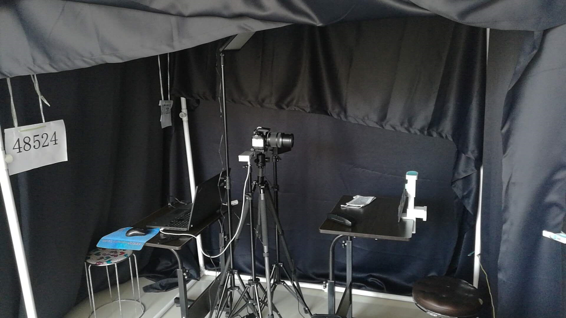
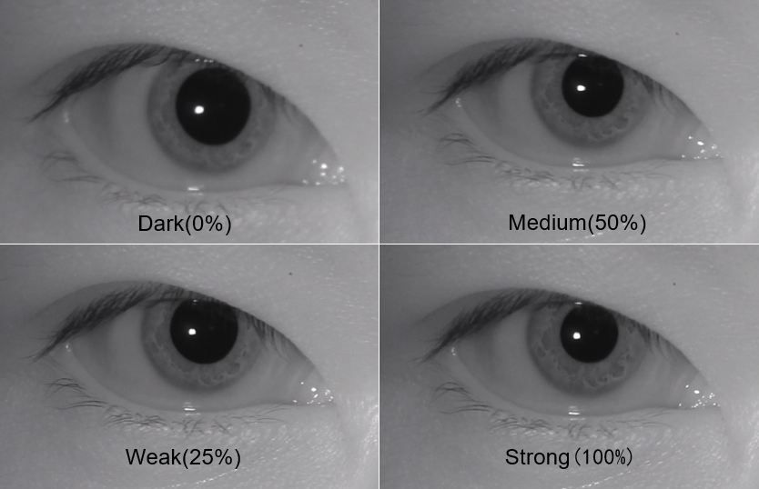
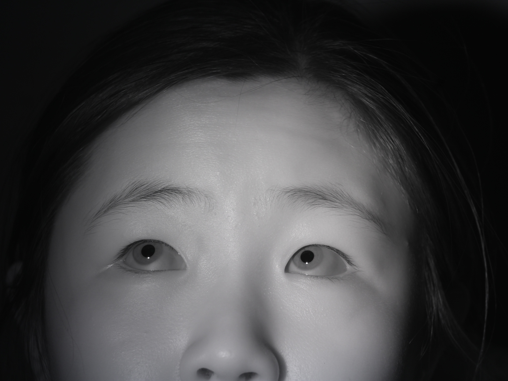
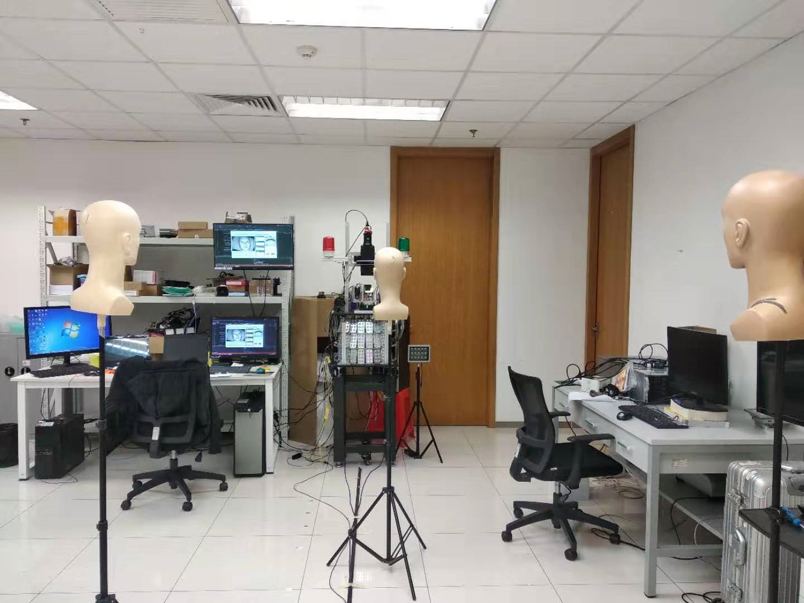
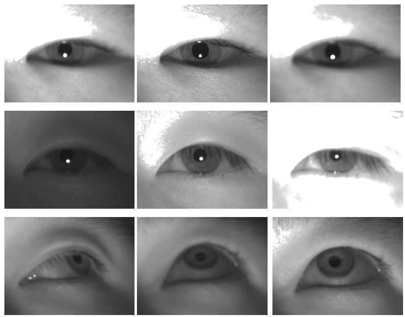

CASIA-Iris-Complex
Introduction
Iris is considered one of the most accurate and reliable biometric modality. Iris is more stable and distinctive compared with fingerprint, face, voice, etc, and difficult to be replicated for spoof attacks. Although an iris pattern is naturally an ideal identifier, the development of a high-performance iris recognition algorithm and transferring it from research lab to practical applications is still a challenging task. In practical applications, the iris recognition system must face various unpredictable iris image degraded. For example, recognition of low-quality iris images, non-cooperative iris images, long-range iris images, and moving iris images are all huge problems in iris recognition. We believe that the first step in solving these problems is to design and develop a database of iris images that includes all of these degraded.
Brief Descriptions and Statistics of the Database
CASIA-Iris-Complex contains totally 22,932 images from 292 Asian subjects. It includes two subsets: CASIA-Iris-CX1 and CASIA-Iris-CX2. All images were collected under NIR illumination and two eyes were captured simultaneously. Detailed information of each subset is shown below.
| Subset Characteristics | CASIA-Iris-CX1 | CASIA-Iris-CX2 |
|---|---|---|
| Sensor | Canon EOS 1300D | MindVision MV-SUF1200GM-T |
| Environment | Indoor with brightness change | Indoor |
| No. of subjects | 255 | 37 |
| No. of classes | 510 | 73 |
| No. of images | 18785 | 4147 |
| Resolution | 4608*3456 | 640*480 |
| Format | jpeg | bmp |
| Distance | 0.75m | 1m,3m,5m |
| Object | Partial face | Eye |
CASIA-Iris-CX1
CASIA-Iris-CX1 is designed to explore quality degrade caused by subject such as pupil dilation, strabismus, and occlusion. Partial face images were captured with a modified Canon EOS 1300D camera which Infrared cut-off filters was replaced by Infrared passing filters. All collection work was finished indoors, and both visible light source and near-infrared light source are used for illumination. 
For pupil dilation, we changed the intensity of visible light to stimulate pupil variety while keeping the intensity of infrared light unchanged. In addition, we also collected images under natural light, such as noon, dusk, sunny and cloudy. 
For strabismus, we placed five targets behind the camera, respectively at the left, top left, top, top right, and right positions. Looking at these targets will cause a squint of about 45 degrees. 
For occlusion, Volunteers were required to wear glasses, mask and using hand to cover mouth. During this section, the near-infrared light source is randomly moved to generate light spot. Meanwhile some glasses also have stains on the surface to occlude iris. Another type of occlusion comes from the person being collected. Volunteers were required to squint or close their eyes. We noticed a more interesting problem is that for some elderly volunteers, their eyelids will naturally sag, resulting in very serious occlusion.
Furthermore, both defocus and motion blur are inevitable during the acquisition process, and we retain these images for research on related issues.
CASIA-Iris-CX2
CASIA-Iris-CX2 is a small-scale experimental dataset used to explore the problems in long-distance iris recognition. We use a self-developed iris imaging system, which can obtain iris images with sufficient resolution (diameter greater than 60 pixels) in the range of 1-6m. 
In the case of a long distance, the image may be defocus blurred due to the error of distance perception. Therefore, we collected a continuous zoom image sequence which is changed as “blur-clear-blur“.
Another problem is near-infrared lighting. The illuminance of a light source with a fixed power and a fixed position is different at different distances. In order to ensure the image consistency of the entire subdataset, we moved the near-infrared light source during the acquisition process and ensured that the brightness of the image was basically equal. At the same time, we also obtained a series of over-exposed/under-exposed images by varying the exposure time (8ms ~ 35ms). 
Database Organization
The file name of each image in CASIA-Iris-Complex is unique to each other and denotes some useful properties associated with the image such as subject ID, left/right eye, image ID etc.
-
The images of CASIA-Iris-CX1 are stored as: AAAA_B_Y_Y_CD_DDD.jpg
- AAAA: the unique identifier of the subject in the subset.
- B: ‘1’ denotes left eye and ‘2’ denotes right eye.
- CC: represent the acquisition conditions.
- ‘2x’ represents brightness, where x is between 0-4, means ‘natural light’, ‘dark’, ‘weak’, ‘medium’, and ‘strong’ brightness.
- ‘3x’ represents the direction of thr person looks at, where x is between 1-4, means left-up, right-up, right-down, left-down.
- ‘40’ and ‘41’ represents squinting and closing eyes.
- ‘5x’ represents occlusion, where x is the occlusion type, and the value is between 1-3, which in turn means that the hand covers the face, wears a mask, and wears glasses
- Note: Unless otherwise specified, the brightness of the image is “medium”, the subject is required to look directly at the camera and not wear obstructions such as glasses.
- DDD: the index of the image in the same scenarios
-
The images of CASIA-Iris-CX1 are stored as: AAAA_B_CD_TTTTTTTTTT.jpg
- AAAA: the unique identifier of the subject in the subset.
- B: ‘1’ denotes left eye and ‘2’ denotes right eye.
- C: the acquisition distance, and the value is between 1-5.
- D: the acquisition conditions.
- ‘1’ denotes normal;
- ‘2’ denotes lens zoom;
- ‘3’ denotes exposure time changes
- ‘4’ denotes turning eyes;
- ‘5’ denotes turning head;
- TTTTTTTTTT: the timestamp of this image.
Copyright Note and Contacts
The database is released for research and educational purposes. We hold no liability for any undesirable consequences of using the database. All rights of the CASIA database are reserved. Any person or organization is not permitted to distribute, publish, copy, or disseminate this database. In all documents and papers that report experimental results based on this database, our efforts in constructing the database should be acknowledged such as “Portions of the research in this paper use the CASIA-Iris-Complex-V1.0 collected by the Chinese Academy of Sciences’ Institute of Automation (CASIA)”.
To download this dataset, plase contact sir@cripac.ia.ac.cn